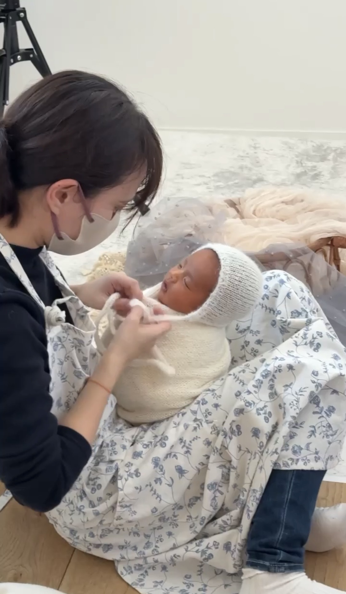
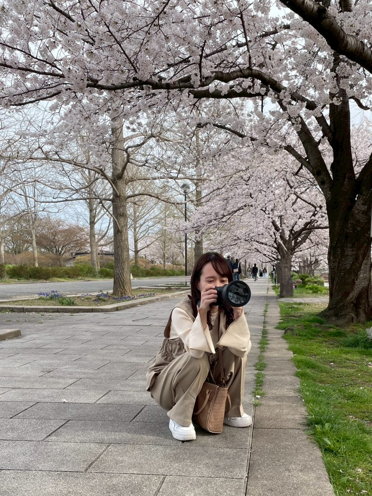
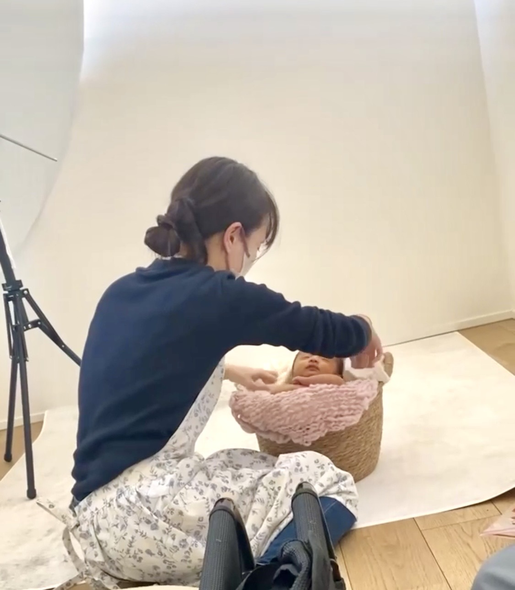
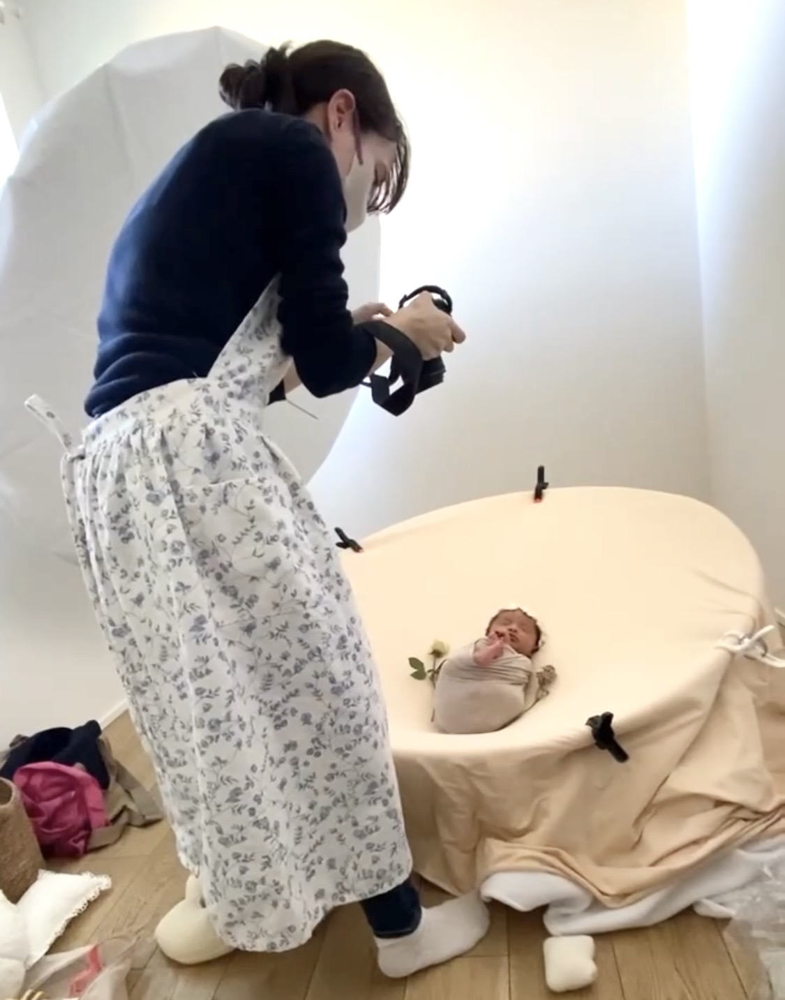

Profile
プロフィール
命に寄り添う助産師フォトグラファー
赤ちゃんとお母さんに、
安心の時間を届けるために。
助産師として母子に関わりながら、今しかない瞬間をやさしく写真に残しています。



はじめに
はじめまして。
ニューボーンフォトグラファーのみゆです。
赤ちゃんとお母さんに寄り添う時間を大切にしながら、
「今しかない瞬間」を写真に残すお手伝いをしています。
経歴
1998年生まれ。三条高等学校卒業。新潟大学を卒業後、
県内の病院で5年間助産師として勤務してきました。
現在は産科クリニックや助産院で母子と関わりながら、
ニューボーンフォトの撮影も行っています。
助産師を目指した理由
実は私は、早産で超低出生体重児として生まれました。
そのとき、たくさんの先生方や助産師、看護師の皆さんに支えられて、
こうして今を生きることができています。
その経験から、
「自分も誰かの力になりたい」
「お母さんや赤ちゃんに寄り添える存在になりたい」
と思い、助産師を志しました。
現在の想い
出産されるお母さんたちと同じ世代だからこそ、
ちょっとした悩みや不安も、気軽に話していただけたら嬉しいなと思っています。
助産師として関わる中で、
出産や育児には喜びだけでなく、不安や戸惑いがあることをたくさん感じてきました。
だからこそ、撮影の時間が少しでもほっとできる時間になるように。
そして、写真を見るたびに「大丈夫」と思えるような、
そんな存在でいられたら嬉しいです。


人柄・プライベート
愛犬と過ごす時間がとても好きで、のんびりした時間に癒されています。
パン作りや推し活も好きで、日常の中に小さな楽しみを見つけるのが好きです。
もともと人とお話しすることが好きなので、
撮影のときも気軽にいろいろなお話をしていただけたら嬉しいです。
これからは、今までやったことのないことにも
少しずつ挑戦していきたいなと思っています。
最後に
お母さんと赤ちゃんにとって、
この瞬間があたたかい思い出として残るように。
安心して任せていただけるよう、
心を込めて撮影させていただきます。